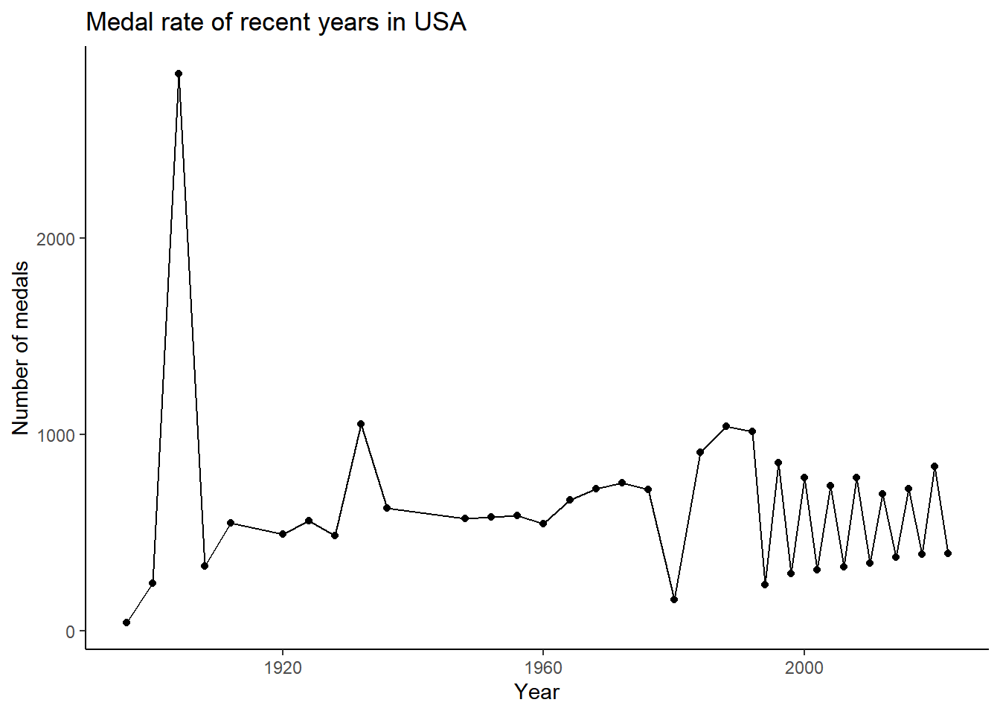
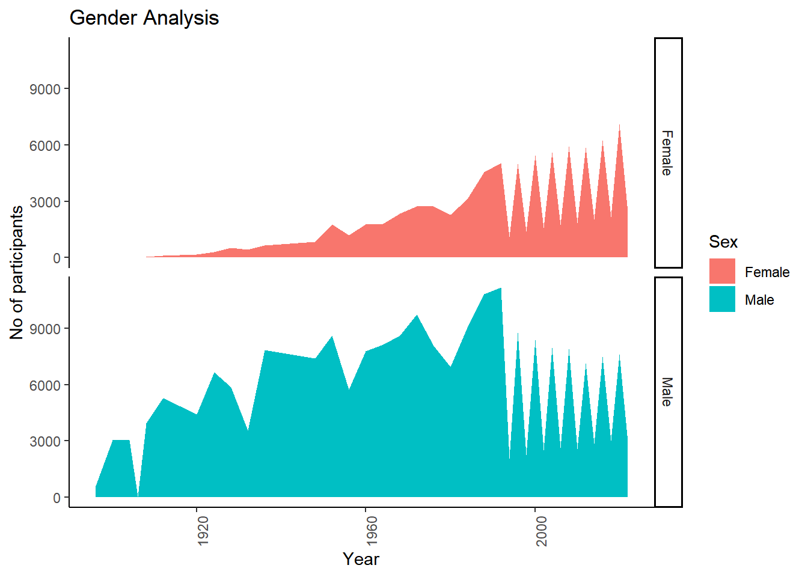
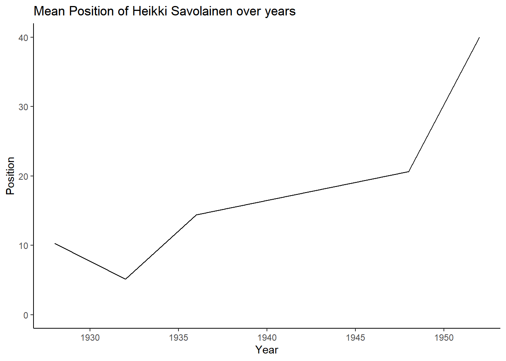

The Olympic Games are the world’s only truly global, multi-sport, celebratory athletics competition. With more than 200 countries participating in over 400 events across the Summer and Winter Games, the Olympics are where the world comes to compete, feel inspired, and be together. The evolution of the Olympic Movement during the 20th and 21st centuries has resulted in several changes to the Olympic Games. Some of these adjustments include the creation of the Winter Olympic Games for snow and ice sports, the Paralympic Games for athletes with disabilities, the Youth Olympic Games for athletes aged 14 to 18, the five Continental games (Pan American, African, Asian, European, and Pacific), and the World Games for sports that are not contested in the Olympic Games.
Specifically, in this project I have multiple data sets on Olympic games and their results and on the athletes. They contain the detailed information on the athlete including their sex, DOB, height, weight and their country. And also the detailed results on each game and medals won by each country and info on every event and competitions.
This data set contains:
154,902 unique athletes and their biological information i.e. height, weight, date of birth All Winter / Summer Olympic games from 1896 to 2022 7326 unique results 314,726 rows of athlete to result data which includes both team sports and individual sports each row includes position - which is how well the athlete performed for the specific event. Note: not all position is integer - contains strings which contains information on which round / heat they achieved 235 distinct countries (some existing from the past)
Research questions
How is the athlete biological info factors in the number of medals won by athletes?
How is the medals won trend is setting on by the changing year?
How is the athlete result change as he participants in more seasons and is it dependent factor and is the experience proves anything?
Are more medals are won by playing in teams or individually?
Reading the data
There are a total of five data sets which combined contains the complete information on athlete, results and medals. First of all, we need to read the data sets into R and then join them to get a complete data set of the Olympics data. So then we can analysis the data and find the insights.
games <-read_csv("_data/Olympics/Olympics_Games.csv") %>%select(c(edition, edition_id, city, isHeld, competition_start_date, competition_end_date)) %>%na_if("na")games
The reading of data is done and to join the data and get a complete set, it is preferable to join the individual data sets with a full_join() and then tidy up the data as we need and remove the irregularities so we can approach the tidy data so we can get a perfect analysis. It is usually better to not to hard-code the data and have gentle approach by tidying the data individually and joining them and tidy the remaining untidy data after we join, it gives us a better understanding of the data.
Code
athlete_events <-full_join(athlete, events, by =c("athlete_id", "country_noc")) %>%select(!"name")head(athlete_events)
While rendering it is taking a lot of time and consuming more space. So I have commented the below lines to submit my file
Now as the data is joined and it is tidy, we need to make changes to classes of the variables to better suit the values assigned to the variables. And also it is a good pratice to rename and reorder the variables to get a good description and grouping of the variables.
Calculating BMI and Age of Participation for athletes
Now I am calculating BMI from height and weight, so we can get an better view of the biological information of the athlete and also calculating the age of participation so it can be used to further analysis the athlete and know how much is age matters.
Generated by summarytools 1.0.1 (R version 4.1.3) 2022-09-04
Generalized analysis
Code
olympics %>%filter(NOC =="USA") %>%arrange(desc(Year)) %>%group_by(Year) %>%count() %>%ggplot(aes(x =as.numeric(Year), y = n)) +geom_line() +geom_point() +theme_classic() +labs(title ="Medal rate of recent years in USA", x ="Year", y ="Number of medals")

The above figure gives us the fluctuations in the medal won in recent years in USA, they are basically from 300-850. But there is enormous irregularity in the findings as the medals won alternately increase and drops down.
Code
plot <- medals %>%mutate(Year =as.numeric(Year)) %>%group_by(Year, type_of_medal) %>%summarise(sum_medal_count =sum(medal_count), .groups ='drop') %>%mutate(type_of_medal=as.factor(type_of_medal)) %>%ggplot(aes(x = Year, y = sum_medal_count, color = type_of_medal)) +geom_line() +geom_point() +theme_classic() +labs(title ="Medal distribution on basis of Year and type of medal", x ="Year", y ="Number of medals") +theme(axis.text.x=element_text(angle=90)) +guides(color =guide_legend(title ="Type of medal"))ggplotly(plot)
As per the above graph, we get the medal distribution on basis of year and type of medal, It gives us the variations in the Number of medals as by the changing year in different types.
In-depth Analysis
Code
olympics %>%mutate(Year =as.numeric(Year)) %>%group_by(Year) %>%count(Sex) %>%drop_na(Sex) %>%ggplot(aes(x = Year, y = n, fill = Sex)) +geom_area() +theme_classic() +facet_grid(vars(Sex)) +labs(title ="Gender Analysis", x ="Year", y ="No of participants") +theme(axis.text.x=element_text(angle=90))

As per the above graph, we get that there is a huge difference between the male and female participants in the Olympics and there is clearly less female participation when compare to male.
To further analysis I have taken an athlete “Heikki Savolainen” who is top player in gymnastics and played in largest number of events and we will try to approach different factors like age, position, medals, etc.
Code
olympics %>%mutate(Year =as.numeric(Year)) %>%filter(Athlete =="Heikki Savolainen") %>%mutate(Position =as.numeric(Position)) %>%group_by(Year) %>%summarise(mean_position =mean(Position)) %>%ggplot(aes(x = Year, y = mean_position)) +geom_density(stat ="identity") +theme_classic() +labs(title ="Mean Position of Heikki Savolainen over years", x ="Year", y ="Position")

According to the above figure, the athlete position was good but it gradually increased as he is end of his career, so his performance is gradually dropping as he is aging.
Code
p <- olympics %>%mutate(Year =as.numeric(Year)) %>%drop_na(Medal) %>%group_by(Year, TeamSport) %>%count() %>%ggplot(aes(x = Year, y = n, fill = TeamSport)) +geom_bar(stat ="identity") +theme_minimal() +labs(title ="Medals earned in Team Sport vs Individual Sport", x ="Year", y ="No of medals") +theme(axis.text.x=element_text(angle=90)) +guides(color =guide_legend(title ="Team Sport"))ggplotly(p)
As per the data, it is clear that the medals earned due to individual sports are greater than team sports ad this can be due to many reasons and the major reason is due to having more number of individual sports in Olympics than team sports.
Conclusion
The further analysis is required for more in depth analysis, but as by our analysis so far the career of an Olympic athlete starts with the passion to win gold for their country and as he tries many times in every event and in every season and wins medals based on his hard work but as the age increases and year passes by the position gradually decreases, for example as we saw in the above in-depth analysis, position of the athlete depends on many factors but it biological factors matter and from this analysis we can also say that an athlete win doesn’t individually depend on him and individuality is also important, but further exploratory analysis is required and data available is not so conclusive.
Bibliography
OlyMADMen - The Incredible Community of dedicated Olympic historians and statisticians who worked with Olympians and gathered mass amount of data for olympedia.org.
Randi H Griffin - Author of 120 years of Olympic history: athletes and results which this dataset is inspired from.
Richard Carlier - Providing Constructive feedback and data schema diagram to help make this dataset better.
Gwanhee Lee - Provided an iniatial web scrapping for the olympedia.org website
David Mo - Mentorship for software engineering practices
Source Code
---title: "DACSS601 Final Project"author: "Mani Shanker Kamarapu"description: "Analysis of Olympics data from 1896-present"date: "09/03/2022"format: html: df-print: paged toc: true code-fold: true code-copy: true code-tools: true css: styles.csscategories: - Final_project - Olympics---### Setting up the libraries```{r}#| label: setup#| warning: false#| message: falselibrary(tidyverse)library(ggplot2)library(summarytools)library(lubridate)library(scales)library(plotly)knitr::opts_chunk$set(echo =TRUE, warning=FALSE, message=FALSE)```## IntoductionThe Olympic Games are the world's only truly global, multi-sport, celebratory athletics competition. With more than 200 countries participating in over 400 events across the Summer and Winter Games, the Olympics are where the world comes to compete, feel inspired, and be together. The evolution of the Olympic Movement during the 20th and 21st centuries has resulted in several changes to the Olympic Games. Some of these adjustments include the creation of the Winter Olympic Games for snow and ice sports, the Paralympic Games for athletes with disabilities, the Youth Olympic Games for athletes aged 14 to 18, the five Continental games (Pan American, African, Asian, European, and Pacific), and the World Games for sports that are not contested in the Olympic Games. Specifically, in this project I have multiple data sets on Olympic games and their results and on the athletes. They contain the detailed information on the athlete including their sex, DOB, height, weight and their country. And also the detailed results on each game and medals won by each country and info on every event and competitions. This data set contains:154,902 unique athletes and their biological information i.e. height, weight, date of birthAll Winter / Summer Olympic games from 1896 to 20227326 unique results314,726 rows of athlete to result data which includes both team sports and individual sportseach row includes position - which is how well the athlete performed for the specific event.Note: not all position is integer - contains strings which contains information on which round / heat they achieved235 distinct countries (some existing from the past):::{.callout-important}### Research questions1. How is the athlete biological info factors in the number of medals won by athletes?2. How is the medals won trend is setting on by the changing year?3. How is the athlete result change as he participants in more seasons and is it dependent factor and is the experience proves anything?4. Are more medals are won by playing in teams or individually?:::## Reading the dataThere are a total of five data sets which combined contains the complete information on athlete, results and medals. First of all, we need to read the data sets into R and then join them to get a complete data set of the Olympics data. So then we can analysis the data and find the insights.```{r}athlete <-read_csv("_data/Olympics/Olympic_Athlete_Bio.csv") %>%na_if("na")head(athlete)```While rendering it is taking a lot of time and consuming more space. So I have commented the below lines to submit my file```{r}# print(dfSummary(athlete, # varnumbers = FALSE, # plain.ascii = FALSE, # graph.magnif = 0.70, # style = "grid", # valid.col = FALSE), # method = 'render', # table.classes = 'table-condensed')``````{r}events <-read_csv("_data/Olympics/Olympic_Athlete_Event_Results.csv") %>%na_if("na")head(events)```While rendering it is taking a lot of time and consuming more space. So I have commented the below lines to submit my file```{r}# print(dfSummary(events, # varnumbers = FALSE, # plain.ascii = FALSE, # graph.magnif = 0.70, # style = "grid", # valid.col = FALSE), # method = 'render', # table.classes = 'table-condensed')``````{r}medals <-read_csv("_data/Olympics/Olympic_Games_Medal_Tally.csv") %>%select(!c("year", "total")) %>%na_if("na")head(medals)```While rendering it is taking a lot of time and consuming more space. So I have commented the below lines to submit my file```{r}# print(dfSummary(medals, # varnumbers = FALSE, # plain.ascii = FALSE, # graph.magnif = 0.70, # style = "grid", # valid.col = FALSE), # method = 'render', # table.classes = 'table-condensed')``````{r}results <-read_csv("_data/Olympics/Olympic_Results.csv") %>%select(!"result_detail") %>%na_if("na")head(results)```While rendering it is taking a lot of time and consuming more space. So I have commented the below lines to submit my file```{r}# print(dfSummary(results, # varnumbers = FALSE, # plain.ascii = FALSE, # graph.magnif = 0.70, # style = "grid", # valid.col = FALSE), # method = 'render', # table.classes = 'table-condensed')``````{r}games <-read_csv("_data/Olympics/Olympics_Games.csv") %>%select(c(edition, edition_id, city, isHeld, competition_start_date, competition_end_date)) %>%na_if("na")games``````{r}# print(dfSummary(games, # varnumbers = FALSE, # plain.ascii = FALSE, # graph.magnif = 0.70, # style = "grid", # valid.col = FALSE), # method = 'render', # table.classes = 'table-condensed')```## Joining the dataThe reading of data is done and to join the data and get a complete set, it is preferable to join the individual data sets with a `full_join()` and then tidy up the data as we need and remove the irregularities so we can approach the tidy data so we can get a perfect analysis. It is usually better to not to hard-code the data and have gentle approach by tidying the data individually and joining them and tidy the remaining untidy data after we join, it gives us a better understanding of the data. ```{r}athlete_events <-full_join(athlete, events, by =c("athlete_id", "country_noc")) %>%select(!"name")head(athlete_events)```While rendering it is taking a lot of time and consuming more space. So I have commented the below lines to submit my file```{r}# print(dfSummary(athlete_events, # varnumbers = FALSE, # plain.ascii = FALSE, # graph.magnif = 0.70, # style = "grid", # valid.col = FALSE), # method = 'render', # table.classes = 'table-condensed')``````{r}olympics_competition <-full_join(athlete_events, results, by =c("edition", "edition_id", "result_id", "sport"))head(olympics_competition)```While rendering it is taking a lot of time and consuming more space. So I have commented the below lines to submit my file```{r}# print(dfSummary(olympics_competition, # varnumbers = FALSE, # plain.ascii = FALSE, # graph.magnif = 0.70, # style = "grid", # valid.col = FALSE), # method = 'render', # table.classes = 'table-condensed')``````{r}olympics <-full_join(olympics_competition, games, by =c("edition", "edition_id")) %>%filter(is.na(isHeld)) %>%select(!c("event", "isHeld")) head(olympics)```While rendering it is taking a lot of time and consuming more space. So I have commented the below lines to submit my file```{r}# print(dfSummary(olympics, # varnumbers = FALSE, # plain.ascii = FALSE, # graph.magnif = 0.70, # style = "grid", # valid.col = FALSE), # method = 'render', # table.classes = 'table-condensed')```## Tidying the dataNow as the data is joined and it is tidy, we need to make changes to classes of the variables to better suit the values assigned to the variables. And also it is a good pratice to rename and reorder the variables to get a good description and grouping of the variables.```{r}olympics <- olympics %>%mutate(height =as.numeric(height), weight =as.numeric(weight), born =as.Date(born, "%d-%m-%Y"), start_date =as.Date(start_date, "%d-%m-%Y"), end_date =as.Date(end_date, "%d-%m-%Y"), competition_start_date =as.Date(competition_start_date, "%d-%m-%Y"), competition_end_date =as.Date(competition_end_date, "%d-%m-%Y"))head(olympics)``````{r}medals <- medals %>%separate("edition", into =c("Year", "Season", "del"), sep =" ") %>%select(!del) %>%pivot_longer(c("gold", "silver", "bronze"), names_to ="type_of_medal", values_to ="medal_count")head(medals)```## Renaming the columns```{r}colnames(olympics) <-c("Athlete_id", "Sex", "DOB", "Height", "Weight", "Country", "NOC", "Edition", "Edition_id", "Sport", "Result_id", "Athlete", "Position", "Medal", "TeamSport", "Event", "Result_location", "No_of_participants", "Result_format", "Result_description", "Event_start_date", "Event_end_date", "City", "Competition_start_date", "Competition_end_date")head(olympics)```## Calculating BMI and Age of Participation for athletesNow I am calculating BMI from height and weight, so we can get an better view of the biological information of the athlete and also calculating the age of participation so it can be used to further analysis the athlete and know how much is age matters.```{r}olympics <- olympics %>%mutate(BMI = Weight/(Height/100)^2, .keep ="unused") %>%separate(Edition, into =c("Year", "Season", "del"), sep =" ") %>%select(!del) %>%mutate(Age =as.integer((Event_start_date-DOB)/365.25)) head(olympics)```## Rearranging the columns```{r}olympics <- olympics %>%relocate(c("Athlete", "BMI", "Age"), .after ="Athlete_id") head(olympics)``````{r}print(dfSummary(olympics,varnumbers =FALSE,plain.ascii =FALSE,graph.magnif =0.70,style ="grid",valid.col =FALSE),method ='render',table.classes ='table-condensed')```## Generalized analysis```{r}olympics %>%filter(NOC =="USA") %>%arrange(desc(Year)) %>%group_by(Year) %>%count() %>%ggplot(aes(x =as.numeric(Year), y = n)) +geom_line() +geom_point() +theme_classic() +labs(title ="Medal rate of recent years in USA", x ="Year", y ="Number of medals")```The above figure gives us the fluctuations in the medal won in recent years in USA, they are basically from 300-850. But there is enormous irregularity in the findings as the medals won alternately increase and drops down.```{r}plot <- medals %>%mutate(Year =as.numeric(Year)) %>%group_by(Year, type_of_medal) %>%summarise(sum_medal_count =sum(medal_count), .groups ='drop') %>%mutate(type_of_medal=as.factor(type_of_medal)) %>%ggplot(aes(x = Year, y = sum_medal_count, color = type_of_medal)) +geom_line() +geom_point() +theme_classic() +labs(title ="Medal distribution on basis of Year and type of medal", x ="Year", y ="Number of medals") +theme(axis.text.x=element_text(angle=90)) +guides(color =guide_legend(title ="Type of medal"))ggplotly(plot)```As per the above graph, we get the medal distribution on basis of year and type of medal, It gives us the variations in the Number of medals as by the changing year in different types.## In-depth Analysis```{r}olympics %>%mutate(Year =as.numeric(Year)) %>%group_by(Year) %>%count(Sex) %>%drop_na(Sex) %>%ggplot(aes(x = Year, y = n, fill = Sex)) +geom_area() +theme_classic() +facet_grid(vars(Sex)) +labs(title ="Gender Analysis", x ="Year", y ="No of participants") +theme(axis.text.x=element_text(angle=90)) ```As per the above graph, we get that there is a huge difference between the male and female participants in the Olympics and there is clearly less female participation when compare to male.To further analysis I have taken an athlete "Heikki Savolainen" who is top player in gymnastics and played in largest number of events and we will try to approach different factors like age, position, medals, etc. ```{r}olympics %>%mutate(Year =as.numeric(Year)) %>%filter(Athlete =="Heikki Savolainen") %>%mutate(Position =as.numeric(Position)) %>%group_by(Year) %>%summarise(mean_position =mean(Position)) %>%ggplot(aes(x = Year, y = mean_position)) +geom_density(stat ="identity") +theme_classic() +labs(title ="Mean Position of Heikki Savolainen over years", x ="Year", y ="Position")```According to the above figure, the athlete position was good but it gradually increased as he is end of his career, so his performance is gradually dropping as he is aging.```{r}p <- olympics %>%mutate(Year =as.numeric(Year)) %>%drop_na(Medal) %>%group_by(Year, TeamSport) %>%count() %>%ggplot(aes(x = Year, y = n, fill = TeamSport)) +geom_bar(stat ="identity") +theme_minimal() +labs(title ="Medals earned in Team Sport vs Individual Sport", x ="Year", y ="No of medals") +theme(axis.text.x=element_text(angle=90)) +guides(color =guide_legend(title ="Team Sport"))ggplotly(p)```As per the data, it is clear that the medals earned due to individual sports are greater than team sports ad this can be due to many reasons and the major reason is due to having more number of individual sports in Olympics than team sports.## ConclusionThe further analysis is required for more in depth analysis, but as by our analysis so far the career of an Olympic athlete starts with the passion to win gold for their country and as he tries many times in every event and in every season and wins medals based on his hard work but as the age increases and year passes by the position gradually decreases, for example as we saw in the above in-depth analysis, position of the athlete depends on many factors but it biological factors matter and from this analysis we can also say that an athlete win doesn't individually depend on him and individuality is also important, but further exploratory analysis is required and data available is not so conclusive. ## Bibliography1. OlyMADMen - The Incredible Community of dedicated Olympic historians and statisticians who worked with Olympians and gathered mass amount of data for olympedia.org.2. Randi H Griffin - Author of 120 years of Olympic history: athletes and results which this dataset is inspired from.3. Richard Carlier - Providing Constructive feedback and data schema diagram to help make this dataset better.4. Gwanhee Lee - Provided an iniatial web scrapping for the olympedia.org website5. David Mo - Mentorship for software engineering practices